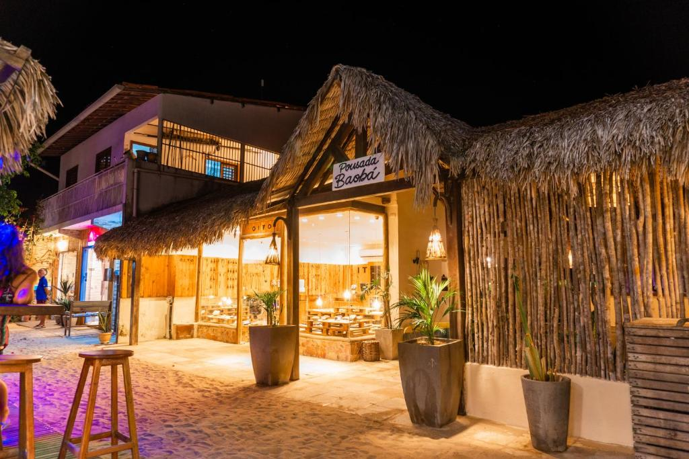

The most varied types of accommodations are present in the village, from small, simple family inns to luxurious hotels. to luxurious hotels. It all depends on what you are willing to pay and what you get. Some some of the accommodations are on the beachfront, others are on internal streets - but in general everything is very cozy and accessible is very cozy and accessible with a short walk.
Baobab Inn
A nice, small and very well located inn is baobab, ideal for those looking for something economical and central.
